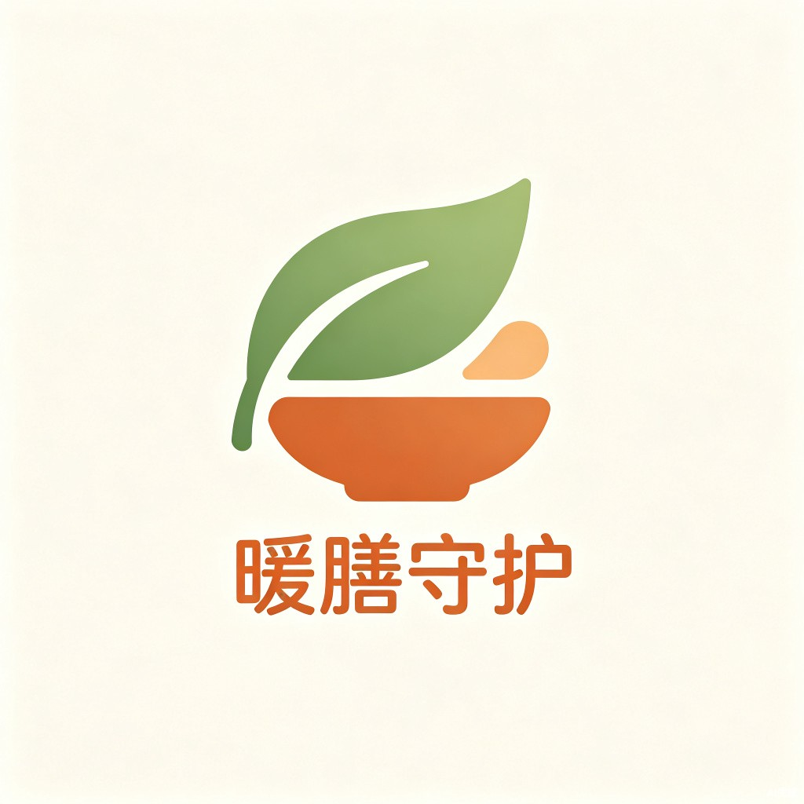

AI 陪家属，一步步照护卧床老人专为 4000 万失能半失能老人家庭设计
3 分钟营养风险筛查，AI 自动生成个性化食谱，根据基础疾病智能忌口
拍照上传，AI 识别皮肤特征，判断风险等级，告诉你该注意观察还是立即就医
像视频通话一样，一步步语音引导，每步安全提醒，必须确认才能进入下一步
请根据奶奶近期的实际情况作答。AI 将按照 MNA-SF 标准量表综合评估营养风险等级，并结合基础疾病智能生成饮食建议。
参考：MNA-SF 微型营养评定简表 v2（Rubenstein et al. 2001）